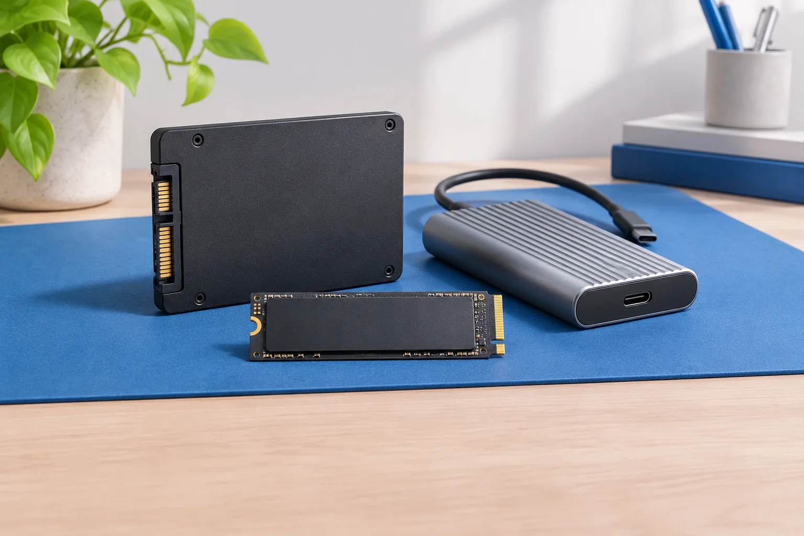

SATA PARA PC E NOTEBOOK ANTIGOS
Melhor SSD SATA
O upgrade que mais dá vida a PC e notebook antigos: troca o HD e o computador liga em segundos.

Melhor custo-benefício SATAKingston A400 480 GB
CURADORIA TECHAPROVADO · 2026
O SSD certo depende primeiro do encaixe do seu computador, depois do espaço. Separamos 12 modelos em 3 perfis, do custo-benefício ao top de linha, e dizemos para quem cada um vale a pena.

NOSSA LEITURA
Notebook e PC antigos usam SATA de 2,5 polegadas; os atuais têm encaixe M.2 para NVMe. Na dúvida, procure o modelo do seu notebook ou da placa-mãe com "M.2" no Google. Para backup e celular, o externo serve em qualquer aparelho.
COMECE POR AQUI
SATA PARA PC E NOTEBOOK ANTIGOS
O upgrade que mais dá vida a PC e notebook antigos: troca o HD e o computador liga em segundos.
NVME M.2 PARA PC, NOTEBOOK E PS5
O formato de "chiclete" dos PCs e notebooks atuais: até 14 vezes mais rápido que o SATA.

EXTERNO PORTÁTIL
Backup, fotos e vídeos da câmera ou do celular: cabe no bolso e é dez vezes mais rápido que um HD externo.

A FICHA, TRADUZIDA
01 - FORMATO
O SATA tem o formato de um HD de notebook e liga por um cabo (no PC) ou num encaixe (no notebook). O NVMe é uma plaquinha M.2 que encaixa direto na placa-mãe, sem cabo.
Quase todo computador feito até 2016 só aceita SATA. A maioria dos feitos depois de 2018 tem pelo menos um encaixe M.2. Alguns M.2 antigos aceitam só SATA M.2, não NVMe: confira no manual.
Não dá para colocar NVMe num computador que só tem SATA sem um adaptador de placa (em PC) — em notebook, não dá.
02 - VELOCIDADE
A velocidade em MB/s diz quantos megabytes o SSD lê ou grava por segundo em arquivos grandes. HD comum: cerca de 100 MB/s. SATA: até 560 MB/s. NVMe PCIe 4.0: de 5.000 a 7.300 MB/s.
No dia a dia, a diferença entre SATA e NVMe aparece em cópias grandes e carregamento de jogos. Entre um NVMe de 5.000 e um de 7.300 MB/s, o ganho em jogos é pequeno.
O maior salto que você sente é sair do HD para qualquer SSD: o computador liga e abre programas em segundos.
03 - ESPAÇO
Windows e programas ocupam de 60 a 100 GB. Um jogo atual tem de 50 a 150 GB.
Para notebook de estudo e trabalho, 480 a 500 GB bastam. Para jogos, comece em 1 TB. Para vídeo e fotos em alta, 2 TB ou mais.
SSD cheio fica mais lento: deixe pelo menos 10% livre.
04 - DURABILIDADE
TBW é quantos terabytes podem ser gravados antes do desgaste previsto pelo fabricante. 600 TBW equivale a gravar mais de 300 GB por dia durante 5 anos.
Para uso doméstico, qualquer SSD da lista dura muitos anos. Durabilidade e garantia longa importam para quem edita vídeo ou grava muito todos os dias.
Guarde a nota: a garantia dos SSDs de marca é de 3 a 5 anos.
05 - PS5
O PS5 aceita SSD NVMe M.2 PCIe 4.0 com pelo menos 5.500 MB/s de leitura, de 250 GB a 8 TB, nos tamanhos 2230 a 22110.
A Sony recomenda dissipador de calor. Os SSDs desta lista são vendidos sem dissipador: compre um à parte, que custa pouco.
Desta seleção, o Crucial T500 e o WD Black SN850X atendem com folga. O Kingston NV3 de 1 TB passa do mínimo, mas não tem DRAM.
A CURADORIA EM DETALHE
12 modelos da pesquisa
PERFIL · 4 MODELOS, DA ENTRADA AO TOP DE LINHA
O SSD SATA de 2,5 polegadas tem o mesmo formato do HD de notebook e encaixa em praticamente qualquer computador dos últimos 15 anos. Ele é cinco vezes mais rápido que um HD comum, e é isso que faz o Windows abrir rápido. A escada sobe em espaço e durabilidade.
POR DENTRO DA ESCOLHA
O SSD mais básico que vale a compra: 240 GB no formato de 2,5 polegadas, leitura de até 500 MB/s e a marca Kingston, que tem assistência no Brasil.
O A400 de 240 GB é o upgrade mais barato e mais sentido do computador antigo: o Windows passa a abrir em segundos. Para quem só precisa do sistema e de programas leves, ele resolve.
| Formato | 2,5 polegadas, SATA III |
|---|---|
| Capacidade | 240 GB |
| Leitura | Até 500 MB/s |
| Modelo | SA400S37/240G |
Fonte: ficha e descrição do anúncio, conferidas em 16/11/2026. Dados informados pelo fabricante.
SATA · CUSTO-BENEFÍCIO 2 de 4
Melhor custo-benefício SATA
SATA 2,5" · até 500 MB/s · o dobro de espaço
Ver preço na AmazonPOR DENTRO DA ESCOLHA
O mesmo SSD, com o dobro de espaço: 480 GB comportam o Windows, os programas e alguns jogos, sem precisar de um segundo disco.
O A400 de 480 GB é onde o SSD SATA rende mais: o espaço resolve o dia a dia e o preço por gigabyte é dos melhores. Para a maioria dos computadores antigos, não precisa subir além deste.
| Formato | 2,5 polegadas, SATA III |
|---|---|
| Capacidade | 480 GB |
| Leitura | Até 500 MB/s |
| Modelo | SA400S37/480G |
Fonte: ficha e descrição do anúncio, conferidas em 16/11/2026. Dados informados pelo fabricante.

POR DENTRO DA ESCOLHA
O salto é para 1 TB: espaço para o sistema, vários jogos e a biblioteca de fotos num só disco, com leitura de até 540 MB/s. A Crucial é a marca de consumo da Micron, uma das fabricantes de memória do mundo.
O BX500 de 1 TB é o jeito mais barato de ter muito espaço rápido num computador SATA. Para jogos e arquivos, entrega o que promete. Se você grava muito no disco todos os dias, o 870 EVO do próximo degrau dura mais.
| Formato | 2,5 polegadas, SATA III |
|---|---|
| Capacidade | 1 TB |
| Leitura | Até 540 MB/s |
| Modelo | CT1000BX500SSD1 |
Fonte: ficha e descrição do anúncio, conferidas em 16/11/2026. Dados informados pelo fabricante.

SATA · TOP DE LINHA 4 de 4
Top de linha SATA
SATA 2,5" · até 560 MB/s · 5 anos de garantia
Ver preço na AmazonPOR DENTRO DA ESCOLHA
O topo do SATA: leitura de até 560 MB/s e gravação de até 530 MB/s, que se mantêm em cópias longas graças ao cache próprio, e garantia de 5 anos da Samsung. É o SATA mais rápido e durável da seleção.
O 870 EVO é o SATA para quem não quer pensar em SSD de novo: velocidade constante, durabilidade alta e a garantia mais longa da lista. Para uso doméstico, o BX500 basta.
| Formato | 2,5 polegadas, SATA III |
|---|---|
| Capacidade | 1 TB |
| Leitura / gravação | Até 560 / 530 MB/s |
| Garantia | 5 anos (Samsung) |
Fonte: ficha e descrição do anúncio, conferidas em 16/11/2026. Dados informados pelo fabricante.
PERFIL · 4 MODELOS, DA ENTRADA AO TOP DE LINHA
O SSD NVMe é uma plaquinha M.2 que encaixa direto na placa-mãe. Os modelos PCIe 4.0 desta lista leem de 5.000 a 7.300 MB/s, o que encurta carregamento de jogos e cópia de arquivos grandes. Para PS5, a Sony pede pelo menos 5.500 MB/s e dissipador.

POR DENTRO DA ESCOLHA
O NVMe mais barato que vale a compra: PCIe 4.0, leitura de até 5.000 MB/s (dez vezes o SATA) e formato M.2 2280, o mais comum.
O NV3 de 500 GB é a entrada no NVMe: o sistema fica instantâneo e o preço é baixo. Para jogar, porém, o de 1 TB do próximo degrau compensa mais por gigabyte.
| Formato | M.2 2280, NVMe PCIe 4.0 |
|---|---|
| Capacidade | 500 GB |
| Leitura | Até 5.000 MB/s |
| Modelo | SNV3S/500G |
Fonte: ficha e descrição do anúncio, conferidas em 16/11/2026. Dados informados pelo fabricante.
NVME · CUSTO-BENEFÍCIO 2 de 4
Melhor custo-benefício NVMe
NVMe PCIe 4.0 · até 6.000 MB/s · 1 TB
Ver preço na AmazonPOR DENTRO DA ESCOLHA
O dobro de espaço e mais velocidade: 1 TB e leitura de até 6.000 MB/s, no formato M.2 2280. É o tamanho em que o NVMe passa a dar conta de sistema e jogos num disco só.
O NV3 de 1 TB é onde o NVMe rende mais por real. A diferença para os modelos mais caros aparece em cópias gigantes e cargas de trabalho, não no carregamento de jogos. Para a maioria, é o ponto de parada.
| Formato | M.2 2280, NVMe PCIe 4.0 |
|---|---|
| Capacidade | 1 TB |
| Leitura | Até 6.000 MB/s |
| Modelo | SNV3S/1000G |
Fonte: ficha e descrição do anúncio, conferidas em 16/11/2026. Dados informados pelo fabricante.

NVME · INTERMEDIÁRIO 3 de 4
NVMe PCIe 4.0 · até 7.300 MB/s · compatível com PS5
Ver preço na AmazonPOR DENTRO DA ESCOLHA
O salto é velocidade de topo do PCIe 4.0: leitura de até 7.300 MB/s e gravação de até 6.800 MB/s, com muito mais operações por segundo que o NV3, o que deixa o sistema mais rápido com muitos programas abertos.
O T500 entrega a velocidade dos SSDs premium por um preço intermediário. Em jogos, a diferença para o NV3 é pequena; em edição e cópias grandes, é grande. Vale para quem usa o computador para produzir.
| Formato | M.2 2280, NVMe PCIe 4.0 |
|---|---|
| Capacidade | 1 TB |
| Leitura / gravação | Até 7.300 / 6.800 MB/s |
| Compatível | PC, notebook e PS5 (com dissipador) |
Fonte: ficha e descrição do anúncio, conferidas em 16/11/2026. Dados informados pelo fabricante.

NVME · TOP DE LINHA 4 de 4
Top de linha NVMe
NVMe PCIe 4.0 · até 7.300 MB/s · 600 TBW
Ver preço na AmazonPOR DENTRO DA ESCOLHA
O topo: leitura de até 7.300 MB/s, gravação de até 6.300 MB/s e durabilidade de 600 TBW (terabytes gravados antes do desgaste, o dobro de muitos SSDs comuns). Atende com folga o que a Sony pede para expandir o PS5.
O SN850X é o SSD de quem não quer arriscar: velocidade de topo que se mantém, durabilidade alta e garantia longa da WD. A diferença para o T500 está na constância e na durabilidade, não no pico de velocidade.
| Formato | M.2 2280, NVMe PCIe 4.0 |
|---|---|
| Capacidade | 1 TB |
| Leitura / gravação | Até 7.300 / 6.300 MB/s |
| Durabilidade | 600 TBW |
| Compatível | PC, notebook e PS5 (com dissipador) |
Fonte: ficha e descrição do anúncio, conferidas em 16/11/2026. Dados informados pelo fabricante.
PERFIL · 4 MODELOS, DA ENTRADA AO TOP DE LINHA
O SSD externo liga na porta USB-C ou USB-A e funciona em PC, Mac, notebook, celular e console. Os desta lista transferem cerca de 1.000 MB/s: um filme de 4 GB passa em poucos segundos. A escada sobe em espaço e resistência a queda e água.

EXTERNO · ENTRADA 1 de 4
Externo USB 3.2 · até 1.050 MB/s · menor que um chaveiro
Ver preço na AmazonPOR DENTRO DA ESCOLHA
O SSD externo de marca mais barato da seleção: 1 TB, leitura de até 1.050 MB/s pela USB 3.2 Gen 2 e um corpo do tamanho de um chaveiro, que cabe no bolso.
O XS1000 faz o básico muito bem: é rápido, minúsculo e de uma marca com assistência no Brasil. Para quem precisa de 1 TB portátil, é a melhor porta de entrada.
| Conexão | USB 3.2 Gen 2 (cabo USB-C para USB-A) |
|---|---|
| Capacidade | 1 TB |
| Velocidade | Até 1.050 MB/s |
| Modelo | SXS1000/1000G |
Fonte: ficha e descrição do anúncio, conferidas em 16/11/2026. Dados informados pelo fabricante.

EXTERNO · ALTERNATIVA 2 de 4
Outro caminho: metal, criptografia e controle de calor
Externo USB 3.2 · até 1.050 MB/s · criptografia AES
Ver preço na AmazonPOR DENTRO DA ESCOLHA
O mesmo 1 TB e a mesma velocidade do XS1000, com corpo de alumínio resistente a impacto, controle de temperatura e criptografia por hardware AES de 256 bits, que protege os arquivos com senha.
O T7 é um desvio pela segurança e pela construção: a criptografia faz sentido para quem trabalha com dados sensíveis. Se você só quer espaço, o SanDisk Extreme de 2 TB rende mais.
| Conexão | USB 3.2 Gen 2, USB-C |
|---|---|
| Capacidade | 1 TB |
| Velocidade | Até 1.050 / 1.000 MB/s |
| Segurança | Criptografia AES 256 bits |
| Corpo | Alumínio |
Fonte: ficha e descrição do anúncio, conferidas em 16/11/2026. Dados informados pelo fabricante.
EXTERNO · CUSTO-BENEFÍCIO 3 de 4
Melhor custo-benefício externo
Externo USB 3.2 · até 1.050 MB/s · resistente a água e poeira
Ver preço na AmazonPOR DENTRO DA ESCOLHA
O dobro do espaço, 2 TB, com velocidade de até 1.050 MB/s, corpo emborrachado com resistência a água e poeira, argola para prender na mochila e 3 anos de garantia do fabricante.
O SanDisk Extreme é o SSD externo mais equilibrado: muito espaço, resistência para o dia a dia e um dos preços por gigabyte mais baixos da seleção. Para a maioria, é o ponto de parada.
| Conexão | USB 3.2 Gen 2, USB-C (com adaptador USB-A) |
|---|---|
| Capacidade | 2 TB |
| Velocidade | Até 1.050 MB/s |
| Resistência | Água e poeira |
| Garantia | 3 anos (fabricante) |
| Modelo | SDSSDE61-2T00 |
Fonte: ficha e descrição do anúncio, conferidas em 16/11/2026. Dados informados pelo fabricante.

EXTERNO · TOP DE LINHA 4 de 4
Top de linha externo
Externo USB 3.2 · resistente a água, poeira e queda
Ver preço na AmazonPOR DENTRO DA ESCOLHA
O topo: 2 TB, até 1.050 MB/s e capa de borracha com resistência a água, poeira e queda, segundo a Samsung. Mantém a velocidade em cópias longas, sem esquentar a ponto de cair o desempenho.
O T7 Shield é o SSD externo para quem não pode perder o arquivo: a construção aguenta o tranco e a velocidade não cai no meio da cópia. Para uso em casa, o SanDisk resolve por menos.
| Conexão | USB 3.2 Gen 2, USB-C |
|---|---|
| Capacidade | 2 TB |
| Velocidade | Até 1.050 MB/s |
| Resistência | Água, poeira e queda (Samsung) |
Fonte: ficha e descrição do anúncio, conferidas em 16/11/2026. Dados informados pelo fabricante.
Nenhum modelo encontrado. Tente outro termo ou volte para Todos.
LADO A LADO
| Modelo | Perfil | Posição | Formato | Destaque |
|---|---|---|---|---|
| Kingston A400 240 GB | SATA | Entrada | 2,5 polegadas, SATA III | SATA 2,5" · até 500 MB/s |
| Kingston A400 480 GB | SATA | Custo-benefício | 2,5 polegadas, SATA III | SATA 2,5" · até 500 MB/s · o dobro de espaço |
| Crucial BX500 1 TB | SATA | Intermediário | 2,5 polegadas, SATA III | SATA 2,5" · 1 TB · até 540 MB/s |
| Samsung 870 EVO 1 TB | SATA | Top de linha | 2,5 polegadas, SATA III | SATA 2,5" · até 560 MB/s · 5 anos de garantia |
| Kingston NV3 500 GB | NVMe | Entrada | M.2 2280, NVMe PCIe 4.0 | NVMe PCIe 4.0 · até 5.000 MB/s |
| Kingston NV3 1 TB | NVMe | Custo-benefício | M.2 2280, NVMe PCIe 4.0 | NVMe PCIe 4.0 · até 6.000 MB/s · 1 TB |
| Crucial T500 1 TB | NVMe | Intermediário | M.2 2280, NVMe PCIe 4.0 | NVMe PCIe 4.0 · até 7.300 MB/s · compatível com PS5 |
| WD Black SN850X 1 TB | NVMe | Top de linha | M.2 2280, NVMe PCIe 4.0 | NVMe PCIe 4.0 · até 7.300 MB/s · 600 TBW |
| Kingston XS1000 1 TB | Externo | Entrada | 1 TB | Externo USB 3.2 · até 1.050 MB/s · menor que um chaveiro |
| Samsung T7 1 TB | Externo | Alternativa | 1 TB | Externo USB 3.2 · até 1.050 MB/s · criptografia AES |
| SanDisk Extreme Portable 2 TB | Externo | Custo-benefício | 2 TB | Externo USB 3.2 · até 1.050 MB/s · resistente a água e poeira |
| Samsung T7 Shield 2 TB | Externo | Top de linha | 2 TB | Externo USB 3.2 · resistente a água, poeira e queda |
CONSIDERAÇÕES FINAIS
480 GB e o selo Kingston: o upgrade mais barato que muda o computador.
Os tops de linha (Samsung 870 EVO, WD Black SN850X e T7 Shield) valem para quem trabalha com arquivos pesados todos os dias ou precisa de mais proteção. Para jogar e usar em casa, os de custo-benefício resolvem.
Para computador antigo, o Kingston A400 de 480 GB. Para PC e notebook com M.2, o Kingston NV3 de 1 TB. Externo, o SanDisk Extreme de 2 TB.
Procure o modelo exato do notebook mais "M.2 NVMe" no Google ou no manual. Se tiver só SATA, use o formato de 2,5 polegadas.
Serve, se for PCIe 4.0 com pelo menos 5.500 MB/s e com dissipador. O Crucial T500 e o WD Black SN850X desta lista atendem.
É o upgrade que mais muda um computador antigo: o sistema liga em segundos e os programas abrem sem espera.
O preço da memória usada nos SSDs subiu em 2025 e 2026 com a demanda dos data centers de inteligência artificial. Por isso, alguns modelos sumiram de estoque.
Porque ele muda várias vezes por dia. Usamos o preço só para montar a escada de cada perfil; o botão leva ao valor atualizado na loja.
TRANSPARÊNCIA EDITORIAL
Separamos os perfis pelo encaixe e pelo uso: SSD SATA para computador antigo, SSD NVMe M.2 para PC, notebook e PS5 e SSD externo portátil. Cada modelo precisa responder com clareza "para quem ele é o certo".
Em cada perfil há modelos em faixas de preço diferentes, e cada degrau precisa entregar algo que o anterior não entrega. Dois modelos com a mesma proposta não entram juntos.
Ficha e especificações foram conferidas nos anúncios das lojas em 16/11/2026.
Os links de compra desta página são de afiliado: se você comprar por eles, o TechAprovado pode ganhar uma comissão, sem custo adicional para você. Isso não muda a ordem nem a escolha dos produtos.
📲 GUIAS E DICAS NO SEU FEED
Dicas práticas antes de comprar, em carrosséis e vídeos curtos, sempre com link para o guia completo.